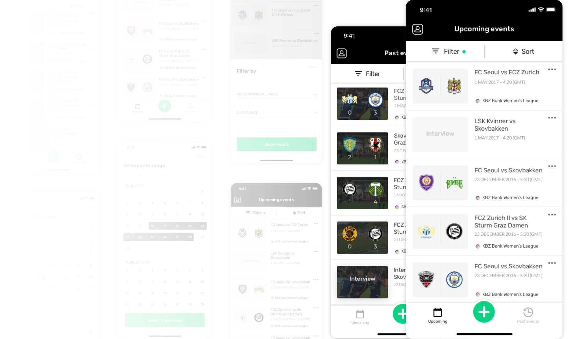
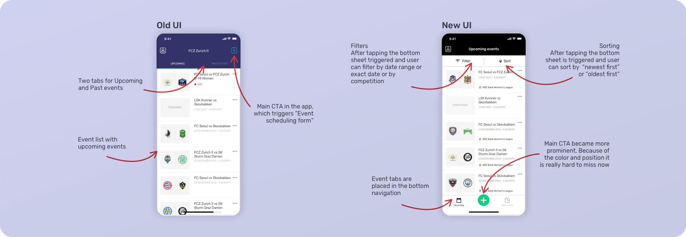
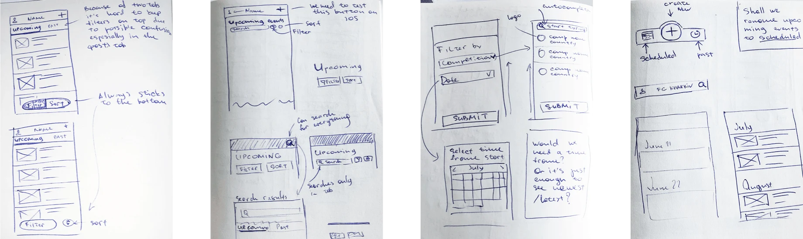
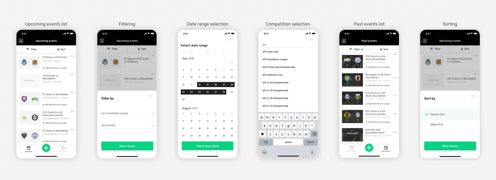

January 2019
Archive
Making content findable again
Partners streaming five to seven matches a day had no search and no filters to find scheduled or past events in the MyCujoo broadcast app. Adding filters turned into a light redesign of the app.

- Discipline
- UI/UX design
- Company
- MyCujoo
- Year
- 2019
- Platform
- Mobile app
01
Problem
The app worked and nobody complained, so nobody had questioned its design. But partners couldn’t find their events, and the main action sat in the least prominent place on the screen.
02
What I did
After meetings with the business and customer interviews, we scoped the first iteration: filter events by date or date range, filter by competition, and sort by date of creation.
The filters didn’t fit into the existing UI, so the Events tab moved to the bottom navigation, and the main action moved there too, prominent and easy to reach. Filters and sorting open in a bottom sheet, so the app works with one hand. When a filter is on, the filter button is highlighted.



03
What I learned
Question the obvious, even in an app that works. We kept learning after launch, collecting data on which filters and search terms people used and how long tasks took, to shape the next iterations.